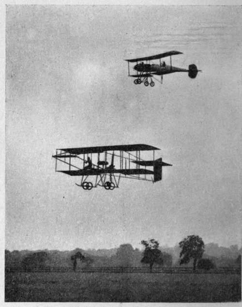

Chapter I. How The Pioneers Set To Work
Description
This section is from the book "All About Flying", by Gertrude Bacon. Also available from Amazon: All About Flying.
Chapter I. How The Pioneers Set To Work
ONE spring day of the year 1903 there came to my old home in Berkshire an elderly American gentleman, courteous, white-haired and keen-eyed. His name was Octave Chanute, and being very greatly interested in all aeronautical matters, he had come to see some experiments which my father was making at the time with a hot-air military balloon.
And at table after lunch I remember that he talked to us of work that was being done in his own country, of many experiments that he himself had carried out in the unsolved problem of human flight, and particularly of the marvellous success of two young American brothers, who had lately achieved some truly astonishing glides on a machine that he had helped to design. He told us how they had established themselves on a lonely spot on the sandy coast of North Carolina, where a steady wind blows ever from the Atlantic ; and how he himself, old man that he was, had gone into camp with them in their Robinson Crusoe isolation, and watched them drag their gliders to the top of the lofty sand-hills and then jump off and float gently to earth; always encouraging them and helping them with new suggestions and ideas until, between them all, they arrived at a gliding apparatus that seemed a marvel for steadiness and ease of control, that had kept in the air for almost half a minute, and made glides of over 600 feet.
Breguet and Grahame-White Biplanes at Hendon.
We listened interested, but not deeply thrilled. The fact that the names of these two brother experimenters were Wilbur and Orville Wright meant little to us. We could not realize that we were being told of the birth of man's latest and grandest achievement ; nor could we foretell that long before his death, seven years later, our guest would be enthusiastically acclaimed on both sides of the Atlantic as ' The Father of Aviation.' In quiet and subtle fashion, without blast of trumpets, do the great things of this world come to pass.
Why did not man learn to fly before ? Certainly not through lack of aspiration, for who in this world of ours has not envied the birds their wings, and longed like them to soar their way through the free pure vault of heaven ! All have desired, and very many have tried, to fly during all the long ages of the past, and undoubtedly the reason they have not succeeded earlier was because they have been led into the wrong paths of approach. For hundreds of years they beat the air with futile wings attached to their bodies like the wings of the bird they imitated, fighting vainly against the fact that man's weak muscles could never by any possibility effectively flap the great pinions which would be needed to support his too, too solid flesh in the air. For hundreds of years also they were content to listen to the jargon of ' upward attractions,' ' ethereal air,' ' little imps in earthen pots,' and the like high-sounding nonsense woven out of the brains of aged ecclesiastics immured in cloistered walls. Presently, too, they were led off down a cul-de-sac by the arrival of the balloon. The day came when men were actually lifted into the realms they longed for by great bags filled with hot air and light gases. Surely now, they said, the sky was conquered at length, and even heaven itself had come within man's grasp !
So they thought and wrote a century and a quarter ago, when first the ? lighter than air' craft came into existence, and before the disadvantages of the new invention had forced themselves into notice. And men went up in balloons with oars, and worked them madly up and down, and marvelled that the only result was their own exhaustion. And they hoisted sails hopefully out at the sides of the car which the wind caught and slewed the balloon round, yet nevertheless the course was not altered to the slightest degree. Slowly and sadly the fact was borne in upon those aerial enthusiasts of the past that their shapely giant vessels, which were to rule the winds and sail the skies, were only as corks floating idly on the sea; merely big bubbles drifting helplessly about the heavens, the sport of every breeze that blew.
More than a hundred and thirty years have elapsed since first man ascended into the sky, and the balloon has taught him many things, it is true. It has taught him facts about the atmosphere that he could have learned in no other way; it has helped him, under favourable circumstances, in warfare and exploration ; it has provided him with a lovely spectacle and a delightful sport. But it has come quickly to the end of its tether. The balloon of today differs only in minor detail from the balloon of 1783, and is as far as ever from the conquest of the final solving of the problem came at last from quite another and wholly unlooked-for event, as we shall shortly see; but in the meantime there was one direction of experiment that was most curiously, and, as it seems now, unaccountably overlooked. From earliest days men must have observed that birds fly not only by flapping their wings, but that with outstretched and perfectly motionless pinions they can soar and glide, with no exercise of their muscles at all, merely by taking advantage of the varying currents of the wind and by reason of their perfect capacity for balancing themselves. From time immemorial mankind had flown kites, and seen them keep up in the air under the action of nothing but the wind and the restraining pull of the string. How came it that that intensely clever race, the Chinese, who spend so much of their lives kite-flying, did not realize that in their national pastime lay the germ of the great discovery ? Of course, without the modern light, internal-combustion, engine practical human flight with kite or glider would still have been impossible ; but man might well have got much further than he did with such resources as he has always possessed, so that when the means of propulsion came at last it would have found him more ready to take advantage of it.
Continue to: